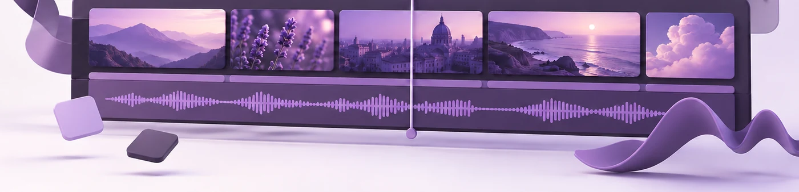

Una campaña, todas las plataformas: encárgalo todo de una vez

Una campaña ya no vive en un solo sitio. La misma idea tiene que funcionar en tu web, en un feed de LinkedIn, como reel vertical y, a veces, en una pantalla sin sonido de una feria. Son películas distintas. El error es encargarlas como trabajos distintos.
Pedidas de una en una, dejan de parecer una sola campaña. Primero la película, los reels unos meses después, algo para el stand más tarde. Tres campañas de tres personas, que suele ser exactamente lo que son.
Cómo es la incoherencia en la práctica
Rara vez es dramática. Es una deriva.
El etalonaje está algo más cálido en el segundo lote, porque se hizo seis meses después en otro monitor. Los chyrons usan una tipografía que no es del todo la de la marca, porque quien los hizo no tenía el archivo. La música es otra pista, porque la primera licencia cubría una película y no una campaña, así que los reels parecen de otra empresa.
Nadie que lo vea sabría decirte qué está mal. Simplemente no conecta las piezas entre sí, lo que significa que cada pieza tiene que presentarte desde cero. Es la repetición lo que hace que una campaña cale, y solo hay repetición si la gente reconoce la segunda cosa como parte de la primera.
Coherente, pero no idéntico
Aquí está la tensión, y es todo el trabajo.
Las piezas tienen que ser reconociblemente la misma campaña: el mismo etalonaje, la misma tipografía, el mismo mundo musical, el mismo ritmo de montaje. Alguien debería saber que eres tú antes de que aparezca el logotipo.
Pero no pueden ser la misma película en duraciones distintas. Ese es el otro fallo, y es igual de común. Cuando las versiones cortas se recortan de la larga, la pieza de quince segundos es la de noventa sin la parte de en medio. Quien ha visto una las ha visto todas. Pagaste cuatro piezas y publicaste una idea.
El mismo aspecto, contenidos distintos. Una abre con el CEO. Otra es el producto en uso, sin una palabra. Otra son treinta segundos de proceso. Misma familia, funciones distintas.
Dónde se desvían los encargos separados
La coherencia es difícil de añadir al final. Se decide sobre todo en cosas que pasan antes, y cada una de ellas es barata una vez y cara dos:
- Un etalonaje, un conjunto de referencias. Igualar un etalonaje que hiciste hace seis meses desde otro proyecto es adivinar.
- Una licencia de música que cubra todos los cortes en todas las plataformas. Licencio en bibliotecas premium de pago, así que esto es cosa mía y no tuya, pero solo funciona si sé la lista completa de piezas en el momento en que elijo la pista. Licenciada a posteriori, un corte cada vez, acabas con una pista distinta en cada uno sin que nadie lo haya elegido.
- Un conjunto de elementos animados (rótulos, chyrons, animación de logotipo), hecho una vez y reutilizado, en vez de rehecho un poco distinto en cada ronda.
- Material rodado sabiendo que venían todos los formatos. Una composición 16:9 pierde cerca del 60% del encuadre en un recorte 9:16, y lo que se va son los lados, que es donde suele estar la composición.
Esta última es la que me llega a mí. A veces puedo reencuadrar plano a plano, acercando y siguiendo al sujeto para mantenerlo en campo. Funciona cuando sobra resolución, cuesta un día, y sigue leyéndose como un plano abierto rescatado.
Con qué te quedas al final
Encargado como un solo trabajo, el mismo material da:
- La película de marca: 60 a 120 segundos, 16:9. El argumento completo.
- El tráiler: 30 a 45 segundos. Condensa el argumento en algo que se sostiene solo, en vez de una película acortada.
- El teaser: 10 a 15 segundos. Un gancho, hecho para que alguien mire.
- Los reels: de tres a seis piezas verticales, 9:16 o 4:5, subtituladas, hechas para funcionar sin sonido.
- El corte cuadrado: 1:1, para los feeds que todavía lo favorecen.
Una campaña de viajes reciente salió como un spot de 30 segundos en horizontal, una versión cuadrada de 60 segundos y cinco reels verticales, todo del mismo material, y la gracia era precisamente que se parecieran entre sí.
Hay dos más que salen casi gratis en cuanto el material existe, y las dos se olvidan en la fase de briefing:
- Un corte sin sonido para pantallas. Los stands de ferias y los monitores de eventos van en bucle sin audio, así que la información tiene que pasar a la pantalla. Es un montaje de verdad y no darle a silenciar, y he construido piezas enteras que solo iban a verse así.
- Versiones en otros idiomas. Subtítulos, o un corte totalmente localizado, en español, inglés y portugués. Hecho junto al original es un añadido pequeño. Hecho un año después obliga a reabrir un proyecto que ya nadie recuerda.
Fotografías y un bumper de 6 segundos para pre-roll suelen estar también ahí al alcance.
Qué es cosa mía y qué no
En cuanto el material existe, todo lo que viene después es de mi lado: el montaje, el etalonaje, los gráficos animados, el sonido, el licenciamiento de la música y del stock, los subtítulos, las versiones. Si falta un plano, normalmente puedo licenciarlo en vez de mandarte a rodar otra vez, que es como se hace buena parte del trabajo corporativo.
Lo que no puedo cambiar después es cómo se rodó algo. Vale la pena acordarlo con quien hace el material:
- Todas las plataformas en las que va a correr la campaña. Escribe la lista, porque las obvias son las que se olvidan.
- Qué piezas, con qué duraciones, en qué formatos.
- Si el material se encuadra sabiendo que vienen recortes verticales.
- Si algo tiene que sostenerse sin sonido ninguno.
- En qué idiomas tiene que existir.
La versión corta
Si el vídeo solo va a vivir en tu web, compra una película. Si va a correr en varias plataformas, y casi siempre va a hacerlo, encarga la campaña entera de una vez. No para ahorrar dinero, aunque suele ahorrarlo, sino porque las cosas que sostienen una campaña se eligen al principio y no se añaden al final.
Si estás planeando algo, cuéntame qué tienes en mente y te digo qué pedir, y qué necesitaría para construir la campaña entera a partir de ello. Esa parte es cosa mía.
← Todos los artículos